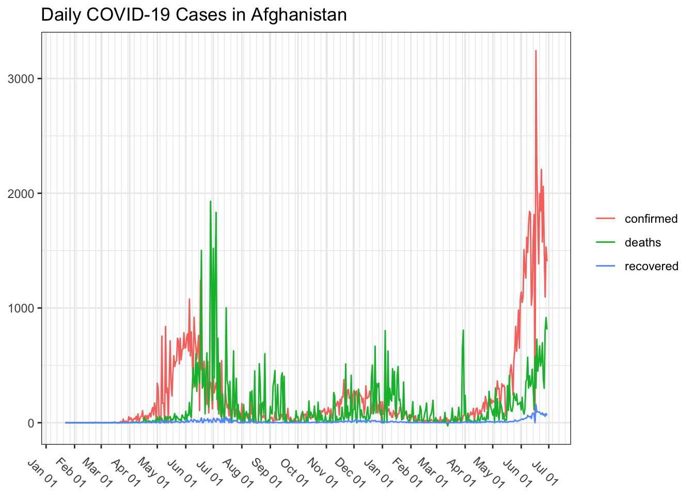

Visualizing COVID-19 Data in R | Johns Hopkins University
2020-05-29In this post, I obtain COVID-19 data from the Johns Hopkins University’s GitHub account and explore how to visualize it specific to each country - Afghanistan as an example here.
First thing first, below packages should be installed and loaded.
# install.packages("dplyr")
library(dplyr)
# install.packages("ggplot2")
library(ggplot2)
# install.packages("tidyr")
library(tidyr)
# install.packages("data.table")
library(data.table)
# install.packages("lubridate")
library(lubridate)
# install.packages("patchwork")
library(patchwork)Step 1: Load the COVID-19 confirmed, recovered, and deaths data
I am using the fread() function from
data.table package for this purpose.
covid19_confirmed_cases <- fread("https://raw.githubusercontent.com/CSSEGISandData/COVID-19/master/csse_covid_19_data/csse_covid_19_time_series/time_series_covid19_confirmed_global.csv")
covid19_recovered <- fread("https://raw.githubusercontent.com/CSSEGISandData/COVID-19/master/csse_covid_19_data/csse_covid_19_time_series/time_series_covid19_recovered_global.csv")
covid19_deaths <- fread("https://raw.githubusercontent.com/CSSEGISandData/COVID-19/master/csse_covid_19_data/csse_covid_19_time_series/time_series_covid19_deaths_global.csv")Step 2: Combine the data frames
Since there is a separate data frame for each type of
COVID-19 cases, I combine all data frames using
rbind() function.
covid19 <- rbind(
covid19_confirmed_cases %>%
mutate(type = "confirmed"),
covid19_recovered %>%
mutate(type = "deaths"),
covid19_deaths %>%
mutate(type = "recovered")
)Let’s have a look at the spread of COVID-19 around the globe.
covid19 %>%
select(Lat, Long, value = colnames(covid19)[length(colnames(covid19))-1], type) %>%
ggplot() +
geom_map(data = map_data('world'), map = map_data('world'), aes(x = long, y = lat, group = group, map_id=region), fill = "black", colour = "gray", size=0.5) +
geom_point(aes(x = Long, y=Lat, size = value, color = type)) +
facet_wrap(~type, ncol = 1) +
scale_y_continuous(breaks=c(), limits = c(-60, 90)) +
scale_x_continuous(breaks=c()) +
labs(x=NULL, y=NULL) +
theme(legend.title = element_blank(), legend.position = "top") +
scale_color_manual(values = c("orange", "red", "green")) Step 3: Subset the merged data frame
Using the filter() function from
dplyr package you can filter the data for any
specific country - Afghanistan as an example here1.
covid19_AFG <- covid19 %>%
# filter the data where Country/Region is Afghanistan
filter(`Country/Region` %in% "Afghanistan") %>%
# remove the Province/State, Country/Region, Lat, and Long columns
select(-`Province/State`, -`Country/Region`, -Lat, -Long) %>%
# transform the data from wide to long format
pivot_longer(-type, names_to = "date", values_to = "cases")Step 4: Plot the data
At this stage, let’s have a glance at the structure of the data.
## tibble [3,429 × 3] (S3: tbl_df/tbl/data.frame)
## $ type : chr [1:3429] "confirmed" "confirmed" "confirmed" "confirmed" ...
## $ date : chr [1:3429] "1/22/20" "1/23/20" "1/24/20" "1/25/20" ...
## $ cases: int [1:3429] 0 0 0 0 0 0 0 0 0 0 ...As seen above, the date column is stored as character format.
One important point to always remember is while visualizing the
time-series data, the time variable must be recorded as
date/time format. To do so, I am using the mdy()2
function from lubridate package to transform
the date column into a standard date format.
covid19_AFG <- covid19_AFG %>%
mutate(date = mdy(date)) %>%
# optionally filter the data for any date range
filter(date < ymd("2021-06-30"))Next, I use the geom_line() function from
ggplot2 package to plot the data.
plot <- covid19_AFG %>%
# initialize a ggplot object
ggplot() +
# specify the line plot aesthetics
geom_line(aes(x = date, y = cases, color = type)) +
# use the black and white theme and set the text angle in the x-axis to -45
theme_bw() + theme(axis.text.x = element_text(angle = -45)) +
# remove the x-axis, y-axis, and legend titles; add the plot title
labs(x = NULL, y = NULL, color = NULL, title = "Cumulative COVID-19 Cases in Afghanistan")
plot
Formatting the x-axis
The scale_x_date() function can be used to
customize the date format in the x-axis. Below are some examples
of how to use the function.
# date in 'MM DD YY' Format. Months in abbreviated format
p1 <- plot + scale_x_date(date_labels = "%b %d - %y")
# date in 'MM DD YY' Format. Months in unabbreviated format
p2 <- plot + scale_x_date(date_labels = "%B %d - %Y")
# date in 'YYYY-MM-DD' format
p3 <- plot + scale_x_date(date_labels = "%Y-%m-%d")
(p1) / (p2 | p3) +
plot_layout(guides = 'collect') &
theme(legend.position = "top")Here are the available options for customizing the date variable:
| Symbol | Meaning | Example |
|---|---|---|
| %d | Days as number | 01-31 |
| %a | Abbreviated weekday | Mon |
| %A | Unabbreviated weekday | Monday |
| %m | Month as number | 01-12 |
| %b | Abbreviated month | Jan |
| %B | Unabbreviated month | January |
| %y | 2-digit year | 02 |
| %Y | 4-digit year | 2020 |
It is also possible to control the numbers of major breaks
and minor breaks using the date_breaks() and
date_minor_breaks() functions.
plot +
# set the date format to Month+Day
scale_x_date(date_labels = "%b %d",
# set the date breaks to 1 month
date_breaks = "1 month",
# set the minor ticks in the x-axis to 1 week
date_minor_breaks = "1 week")The above plot shows the cumulative number of Covid19 cases in Afghanistan. Let’s compute the daily cases by deducting the value of each row from its previous row.
covid19_AFG_daily_cases <- covid19_AFG %>%
group_by(type) %>%
mutate(cases = ifelse(row_number()==1, cases, cases - lag(cases, default = first(cases))))
covid19_AFG_daily_cases %>%
ggplot() +
geom_line(aes(x = date, y = cases, color = type)) +
labs(x = NULL, y = NULL, color = NULL, title = "Daily COVID-19 Cases in Afghanistan") +
theme_bw() + theme(axis.text.x = element_text(angle = -45)) +
scale_x_date(date_labels = "%b %d", date_breaks = "1 month", date_minor_breaks = "1 week")